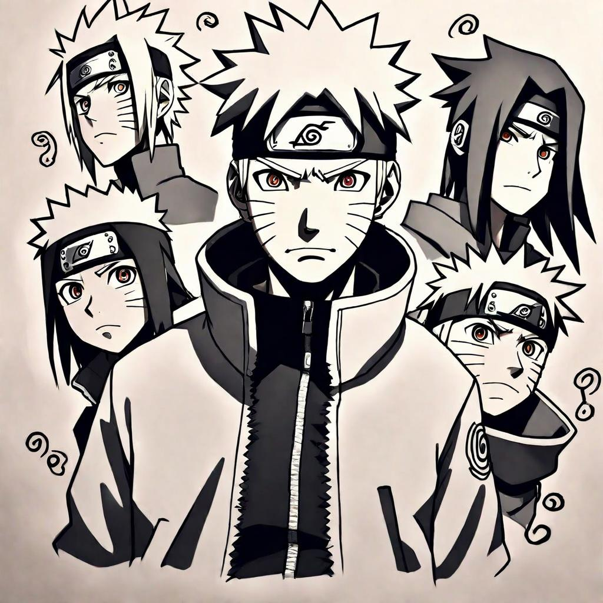

Naruto - Rocks | Lyrics Meaning and Translation | Sentence for Sentence
Introduction
The world of anime openings is filled with memorable tunes that set the stage for the adventures to come. One such iconic opening is "Rocks" by Hound Dog, which served as the very first opening theme for the original Naruto series. "Rocks" is a high-energy rock anthem that perfectly captures the spirit of the early episodes of Naruto, introducing viewers to the world of ninjas, dreams, and determination.
In this article, we will explore the lyrics of "Rocks" sentence by sentence, providing the original Japanese text, Romaji, and English translation. We'll also delve into the deeper meaning behind each line, shedding light on how the song encapsulates the themes and emotions of Naruto's journey.
Background of the Song
Release Details
"Rocks" by Hound Dog was released in 2002 and quickly became synonymous with the Naruto series. As the first opening theme, it played from episodes 1 to 25, setting the tone for Naruto Uzumaki's adventures and the challenges he would face. The song's raw energy and powerful lyrics made it an instant hit among fans.
Inspiration and Creation
Hound Dog, a well-known Japanese rock band, was chosen to perform "Rocks" due to their energetic style that matched the vibrant and action-packed nature of Naruto. The song was composed to inspire and motivate, mirroring Naruto's own determination to become Hokage despite the obstacles in his way.
Sentence-by-Sentence Lyrics Breakdown
Verse 1
Sentence 1:
Original Japanese:
終われるように急いでいる
Romaji:
Owareru yō ni isoide iru
English Translation:
I'm hurrying as if I can end it
Meaning and Interpretation: This line sets the stage with a sense of urgency and determination, much like Naruto's relentless drive to achieve his goals.
Sentence 2:
Original Japanese:
かわいた胸が借りたてるのさ
Romaji:
Kawaita mune ga karitateteru no sa
English Translation:
My thirsty heart is urging me on
Meaning and Interpretation: The speaker's intense desire and passion are driving them forward, reflecting Naruto's inner fire and ambition.
Chorus
Sentence 1:
Original Japanese:
人気は強く輝く星は
Romaji:
Ninki wa tsuyoku kagayaku hoshi wa
English Translation:
The popular, brightly shining stars
Meaning and Interpretation: This line highlights the allure of fame and recognition, something Naruto aspires to achieve.
Sentence 2:
Original Japanese:
今も遠くにある
Romaji:
Ima mo tōku ni aru
English Translation:
Are still far away
Meaning and Interpretation: The journey to success and recognition is long and challenging, a central theme in Naruto's story.
Verse 2
Sentence 1:
Original Japanese:
失って行く求めながら
Romaji:
Ushinatte iku motomenagara
English Translation:
While seeking, I'm losing
Meaning and Interpretation: The speaker acknowledges the losses encountered in the pursuit of their goals, mirroring Naruto's own struggles and sacrifices.
Sentence 2:
Original Japanese:
奪われて行く与えながら
Romaji:
Ubawarete iku ataenagara
English Translation:
While giving, I'm being taken from
Meaning and Interpretation: This line conveys the dual nature of giving and taking, a recurring theme in Naruto's relationships and battles.
Bridge and Outro
Sentence 1:
Original Japanese:
誰のためでなく誰のものでなく
Romaji:
Dare no tame de naku dare no mono de naku
English Translation:
Not for anyone, not belonging to anyone
Meaning and Interpretation: The speaker's actions are for themselves and their own journey, a reflection of Naruto's personal quest for identity and purpose.
Sentence 2:
Original Japanese:
俺たちの今が
Romaji:
Oretachi no ima ga
English Translation:
Our present
Meaning and Interpretation: This line emphasizes the importance of the present moment and living fully in it, a theme that resonates with Naruto's character.
Additional Lines
Sentence 1:
Original Japanese:
思い重ね、夢を重ね、日々を重ね
Romaji:
Omoi kasane, yume wo kasane, hibi wo kasane
English Translation:
Piling up thoughts, piling up dreams, piling up days
Meaning and Interpretation: The repetitive nature of striving, dreaming, and living day by day, much like Naruto's relentless training and perseverance.
Sentence 2:
Original Japanese:
汚せにまみれ、涙こらえ、血を多ぎらせ
Romaji:
Yogose ni mamire, namida kora e, chi wo ōgirase
English Translation:
Covered in dirt, holding back tears, overflowing with blood
Meaning and Interpretation: The harsh realities and sacrifices made in the pursuit of one's goals, reflecting the hardships Naruto faces.
Sentence 3:
Original Japanese:
戦うことも愛し合うことも
Romaji:
Tatakau koto mo aishi au koto mo
English Translation:
Fighting and loving
Meaning and Interpretation: The dual aspects of conflict and affection, both central to Naruto's journey and relationships.
Sentence 4:
Original Japanese:
遥か光の、on the way!
Romaji:
Haruka hikari no, on the way!
English Translation:
Towards the distant light, on the way!
Meaning and Interpretation: A hopeful outlook towards achieving one's goals and dreams, much like Naruto's unwavering optimism.
Sentence 5:
Original Japanese:
裏切ってきた信じながら
Romaji:
Uragitte kita shinji nagara
English Translation:
Betrayed while believing
Meaning and Interpretation: Experiencing betrayal yet maintaining faith, echoing Naruto's own experiences with trust and friendship.
Sentence 6:
Original Japanese:
気付けてきた祈りながら
Romaji:
Kidzukete kita inori nagara
English Translation:
Getting hurt while praying
Meaning and Interpretation: The pain and hope intertwined in the pursuit of one's aspirations, much like Naruto's enduring spirit.
Sentence 7:
Original Japanese:
誰のことでなく誰のせいでなく
Romaji:
Dare no koto de naku dare no sei de naku
English Translation:
Not about anyone, not anyone's fault
Meaning and Interpretation: Taking responsibility for one's own journey and experiences, a theme central to Naruto's character growth.
Sentence 8:
Original Japanese:
俺たちの今を
Romaji:
Oretachi no ima wo
English Translation:
Our present
Meaning and Interpretation: Reiterating the focus on the present moment and its significance.
Sentence 9:
Original Japanese:
痛み解き、心解き、影を解き
Romaji:
Itami toki, kokoro toki, kage wo toki
English Translation:
Untangling pain, untangling the heart, untangling shadows
Meaning and Interpretation: The process of healing and understanding oneself, reflecting Naruto's journey of self-discovery.
Sentence 10:
Original Japanese:
息をつねて走り抜けろ闇を裂いて
Romaji:
Iki wo tsunete hashiri nukero yami wo saite
English Translation:
Keep breathing, run through, tear through the darkness
Meaning and Interpretation: A call to persevere and push through difficult times, much like Naruto's resilience.
Sentence 11:
Original Japanese:
叶えしむことも夢を見ることも
Romaji:
Kanaeshimu koto mo yume wo miru koto mo
English Translation:
Fulfilling dreams and dreaming dreams
Meaning and Interpretation: The ongoing process of striving for and achieving dreams, central to Naruto's narrative.
Sentence 12:
Original Japanese:
終わりはしない on the way
Romaji:
Owari wa shinai on the way
English Translation:
It never ends, on the way
Meaning and Interpretation: The journey and effort are continuous, reflecting Naruto's never-ending quest for improvement and peace.
Themes and Messages
Major Themes in the Song
- Perseverance: The lyrics repeatedly emphasize the importance of continuing to push forward, no matter the obstacles.
- Passion and Energy: The song is infused with a high-energy vibe that mirrors the enthusiasm and drive of Naruto.
- Hope and Future: There is a strong message about striving for a better future and holding onto hope even in difficult times.
Resonance with Listeners
The themes of "Rocks" resonate deeply with listeners, especially fans of Naruto, as they reflect the core values of the series. The song's powerful message and energetic melody inspire determination and hope, much like Naruto himself.
Translation Accuracy and Interpretation
Challenges of Translating Japanese to English
Translating Japanese lyrics to English can be challenging due to cultural nuances and linguistic differences. Certain phrases and emotions may not have direct equivalents in English, requiring careful interpretation to maintain the song's original intent and impact.
Comparison with Other Translations
- Official vs. Fan Translations: Official translations often aim for accuracy and readability, while fan translations may capture more of the song's emotional and cultural context.
- Interpretation Variations: Different translations can offer various perspectives on the song's meaning, enriching the understanding of its themes.
Connection to Naruto
Fit Within the Anime
"Rocks" is a perfect fit for the original Naruto series, capturing the essence of Naruto's early journey, filled with dreams, determination, and the struggles of a young ninja. The song's high-energy rock style matches the dynamic and action-packed nature of the anime.
Fan Reactions
Fans of Naruto have embraced "Rocks" as an iconic opening theme, praising its motivational lyrics and memorable melody. The song is often associated with the nostalgic early days of the series, making it a beloved anthem among long-time fans.
Conclusion
In summary, "Rocks" by Hound Dog is a powerful and energetic opening theme that perfectly encapsulates the spirit of Naruto. Its meaningful lyrics, driving melody, and connection to the series' core themes of perseverance and hope make it an enduring favorite. By examining the song's lyrics sentence by sentence, we gain a deeper appreciation for its impact and the way it mirrors Naruto's journey. We invite you to share your thoughts and interpretations of "Rocks" in the comments, and reflect on how this iconic song has inspired you.
Comments